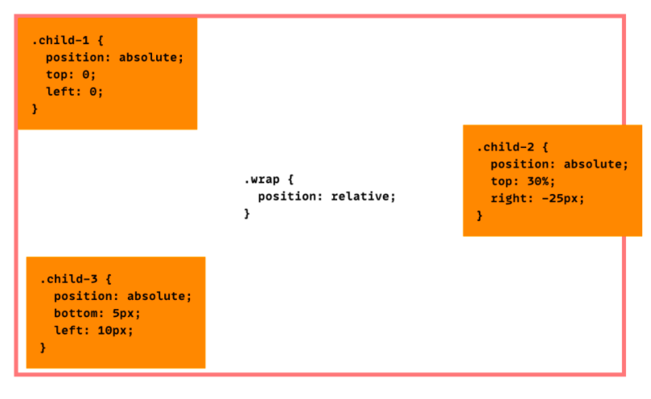

Sometimes it's easy to get lost in a world of terminology, like what's the difference between relative, absolute and fixed positioning?
In web development things (we call them elements) have a natural way of placing themselves on the web page, elements added to the page will take on is natural placement when they have not been told to do something else. This type of placement is called static. But what if you want things to look a little (or a lot) different? What if you want to move things around to suit your site's needs? Well here's where different positioning can come in handy.
Position: relative; will position itself relative to itself. Umm what? Yes i feel you, give me a minute. This is a way of being able to tell something to move without moving everything else around.
If you have a pile of stuff and you move one thing in it, other things might move too right? Well that's just the thing, sometimes with web development things don't organize themselves the way we want them to. Sometimes moving one element changes the way others look. When using position:relative you can tell an element to move to the left a little and that element (including its child elements) will move it the left a little relative to itself. So it won't mess with anything else on the webpage. This is extremely handy when we want to move things a little up or down and for it to do that from its current position nicely.
Ok so that makes sense but what about position: fixed? Using position: fixed positions an element relative to the viewport. This means even if the page is scrolled the element will stay in the same location on the page, the other content will scroll with the page but anything in a fixed position will always be there to access. This is very handy if you want to give people a way to navigate to the top of the page or to other pages of your website at any time no matter where on the page they are.
So what about position: absolute;? This is a way of letting an element override the flow of elements on a page, meaning you can place it wherever you like even if there are other elements in the same location. This gives you a way to place things exactly where you want them no matter how other contents are flowing on the page. Position:absolute; is relative to its parent element.
as you can see .child-1, child-2, and child-3 are using their parent element's position:fixed to reference their placement. This is important to note because if the element does not have a parent element or its parent element is static it will position itself relative to the body element.
This kind of sounds like exactly what you want to be able to do with elements but, position:absolute should be used with careful consideration as it can affect a page's ability to be flexible.
img source https://css-tricks.com/absolute-positioning-inside-relative-positioning/